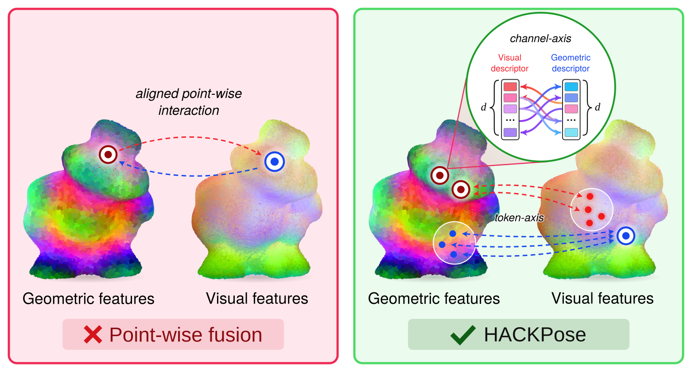
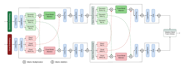

Abstract
Reliable 6D object pose estimation of a known object is a key perception capability for robotic manipulation, where localization errors directly affect downstream grasping, alignment, placement, and interaction. While recent work increasingly focuses on zero-shot generalization, many industrial and laboratory tasks involve known tools, parts, and workpieces observed under changing viewpoints, clutter, and occlusion. In such settings, pose estimation must be both accurate and efficient for repeated use within the manipulation pipeline. We address this problem through an RGB-D keypoint-voting formulation and introduce HACKPose, which improves both the scene evidence used for voting and the canonical targets being voted for. First, a hierarchical axial cross-attention network progressively models visual–geometric interactions along the token and channel axes, allowing independently encoded appearance and geometry features to complement each other more effectively. Second, a dual-modality keypoint selection strategy combines visual and geometric saliency with spatial coverage, producing more informative canonical targets. The keypoint selection is performed offline, while online inference retains a compact voting and geometric fitting pipeline. Across five BOP benchmarks, HACKPose achieves the best mean AR of 88.3 while running at 0.18 s per input on an NVIDIA RTX 3090. Ablations confirm that token–channel interaction and dual-modality keypoint selection address complementary voting bottlenecks, supporting accurate and efficient known-object pose estimation for dynamic robotic workspaces.

Framework Overview
HACKPose is built around a simple principle:
better scene evidence + better voting targets → better keypoint voting


Benchmark Results
HACKPose is evaluated on five BOP benchmark datasets: LM-O, T-LESS, TUD-L, IC-BIN, and YCB-V.
| Method | LM-O | T-LESS | TUD-L | IC-BIN | YCB-V | AR ↑ | Time (s) ↓ |
|---|---|---|---|---|---|---|---|
| Per-object models | |||||||
| Pix2Pose | 58.8 | 51.2 | 82.0 | 39.0 | 78.8 | 62.0 | 4.84 |
| ZebraPose | 78.0 | 86.2 | 95.6 | 65.4 | 89.9 | 83.0 | 2.58 |
| GDRNPP | 77.5 | 87.4 | 96.6 | 72.2 | 92.1 | 85.2 | 6.26 |
| GPose | 79.4 | 91.4 | 96.4 | 73.7 | 92.8 | 86.7 | 2.67 |
| RDPN6D | 77.6 | 76.8 | 95.7 | 72.0 | 88.3 | 82.1 | 2.43 |
| HccePose(BF) | 80.5 | 87.9 | 94.4 | 72.4 | 91.1 | 85.3 | 0.91 |
| Per-dataset models | |||||||
| Koenig-Hybrid | 63.1 | 65.5 | 92.0 | 43.0 | 70.1 | 66.7 | 0.63 |
| CosyPose | 71.4 | 70.1 | 93.9 | 64.7 | 86.1 | 77.2 | 13.74 |
| SurfEmb | 75.8 | 83.3 | 93.3 | 65.6 | 82.4 | 80.1 | 9.05 |
| CIR | 73.4 | 77.6 | 96.8 | 67.6 | 89.3 | 81.0 | – |
| PFA | 79.7 | 85.0 | 96.0 | 67.6 | 88.8 | 83.4 | 2.32 |
| RCVPose3D | 72.9 | 70.8 | 96.6 | 73.3 | 84.3 | 79.6 | 1.34 |
| SCFlow | 80.0 | 91.2 | 97.4 | 74.1 | 93.8 | 87.3 | 1.42 |
| Flose | 86.1 | 86.9 | 98.8 | 74.8 | 92.8 | 87.9 | 1.79 |
| HACKPose (ours) | 84.5 | 87.3 | 98.7 | 75.8 | 95.8 | 88.4 | 0.18 |
The results remain strong across textured and textureless objects, symmetric and asymmetric shapes, heavy clutter, occlusion, multiple instances, and changing lighting conditions. The complete HACKPose pose-estimation pipeline runs at 0.18s per input on an NVIDIA RTX 3090.
HACKPose Deployment on Robot
HACKPose is designed as a perception front-end for known-object localization in robotic workspaces. Its combination of high pose accuracy and low inference latency is particularly relevant to downstream tasks such as:
Real-world deployment on a humanoid robot: a ZED X Mini camera mounted on the robot's head detects and tracks the object pose in real time. Under partial occlusion, the pose remains detectable while only part of the object is visible. For fast recovery, when the camera view is completely blocked and the object is lost, the pose is recovered quickly once the object becomes visible again.
Citation
If you find HACKPose useful in your research, please consider citing:
Submitted to ICRA 2027 and currently under double-anonymous review. The entry below will be updated with authors and proceedings details after the decision.
@misc{hackpose2026,
title = {HACKPose: Hierarchical Axial Cross-Attention for Keypoint-based 6D Object Pose Estimation},
author = {Anonymous},
note = {Submitted to the 2027 IEEE International Conference on Robotics and Automation (ICRA), under review},
year = {2026}
}